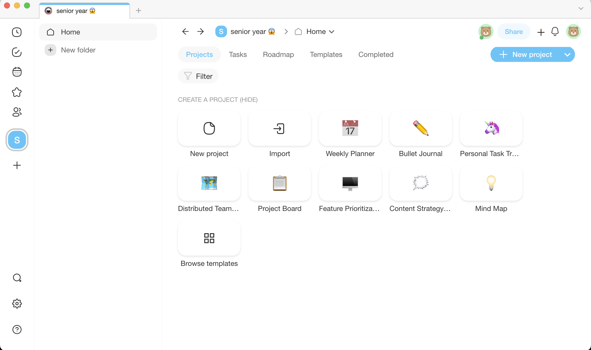
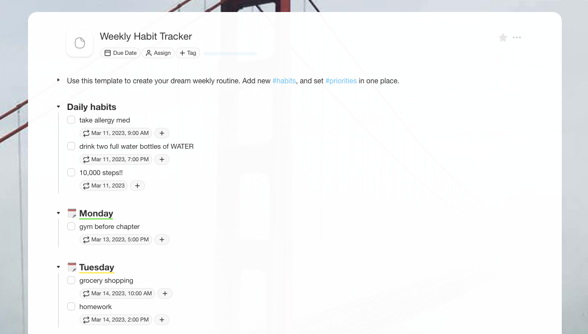
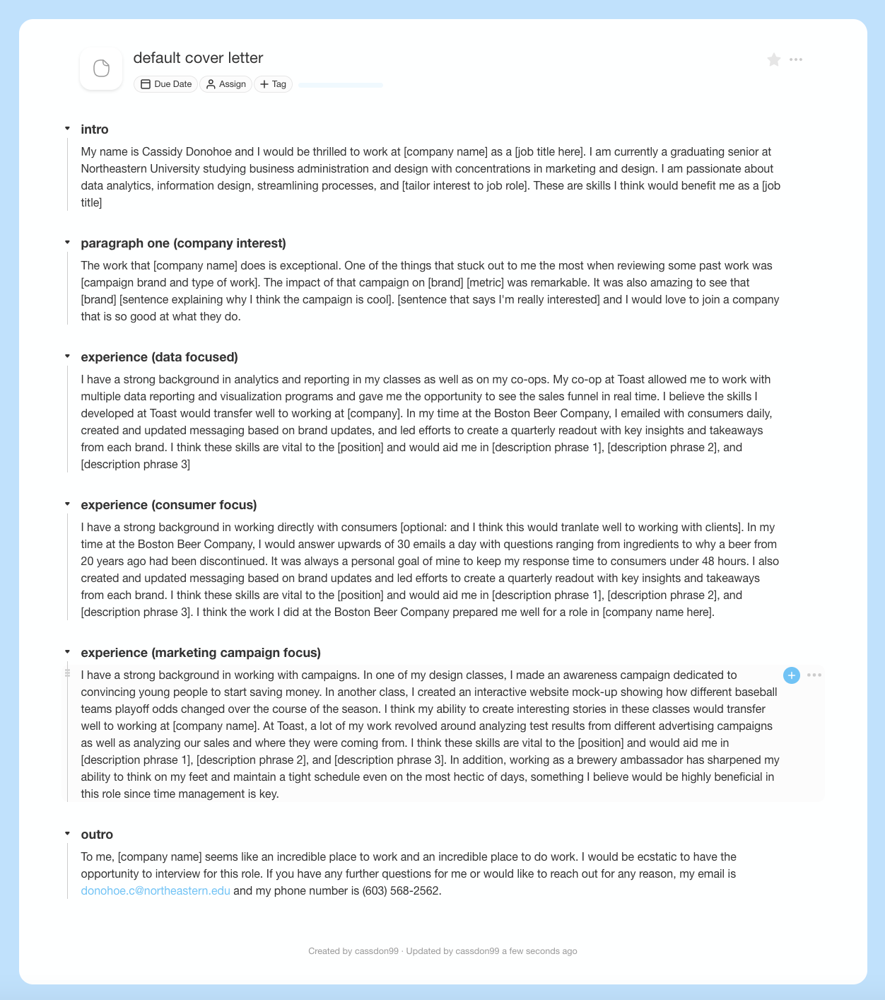

Review of a Digital Tool
This assignment was meant to do two things: expose us to writing on WordPress and expose us to a new tool we had never written with before. I decided to revisit an app I attempted to use my freshman year of college called "Taskade" which hails itself as a do it all task management and organization app. I decided to see how creating a weekly schedule and cover letter template would go (spolier alert: kinda poorly).
Link to the review on WordPress is here
I find myself nearly every single day wishing that I was more organized than I actually am. I fall into the trap of finding the shiny new app and then after a few days it doesn't fit perfectly into my life and I forget about it. Rinse, repeat. So for this review, I thought I should dust off an app I didn't really give a chance to and see how it would work as a tool.
Taskade is a stand-alone time management and organization app. It has a built-in calendar, it has templates for everything from your weekly planner to an organization hierarchy chart to a PR checklist. You can make mind maps and organize complex projects with coworkers, or you can try to fix your life as a college senior. Quite the app!
Upon redownloading Taskade, I was immediately met with the ghosts of my failed tasks from my sophomore year of college. After wiping those two lists from the slate, I was left with the daunting task of creating a workspace for myself. To fit with how I'm feeling, I called it "senior year *scared face emoji*" and set up my first "Project": a weekly planner.
When setting up my weekly planner, I found myself remembering what I didn't like about Taskade—it's easy to set up projects and it's taxing to do just about anything else. For example, trying to create a daily reminder to take my allergy medicine, which is something Taskade advertises as a core function of the app, was incredibly frustrating. I had to go to their help website to figure out how the date and time function worked and discovered there's actually an entire section on creating a recurring task. Perhaps this is me being picky, but I feel like calendar apps have been around long enough that you shouldn't need a help page for people to figure out how yours works. Even after figuring out how to use the calendar, it was tedious to set up my daily and weekly reminders.

Once I felt like I had a grip of sorts on my ability to use Taskade, I decided to use it to write a cover letter template. I have an absolute hatred of cover letters and I think they should be abolished, however, I acknowledge that many jobs are going to ask me for them over the next two months so I should probably have a default template to fill out instead of writing a whole new one every time I apply somewhere.

As far as creating a template goes, I really enjoyed using Taskade. There are some small formatting things, such as the default being "check boxes" for blocks instead of text, but it's easy enough (and not tedious, like the dates are) that I didn't mind doing it. I was able to create a really solid template that I think will be very beneficial to me in creating cover letters in the future.
Overall, I would give Taskade a 3/5. I like that the app is capable of so much, but I'm somewhat disheartened by how difficult it is to do certain things. The app itself is set up well and in my opinion, it's better to look at than Apple's standard time management apps or Google's. I think if you have two hours to watch tutorials, visit the help articles, and set up your workspace, then Taskade is the app for you. However, if you're looking for a simple and easy-to-use, app, then I think there is probably something better for you out there. As for me, I think I'll try to give Taskade another week or two to see if I like it. I didn't spend 30 minutes creating those daily reminders to take my allergy medication for nothing!